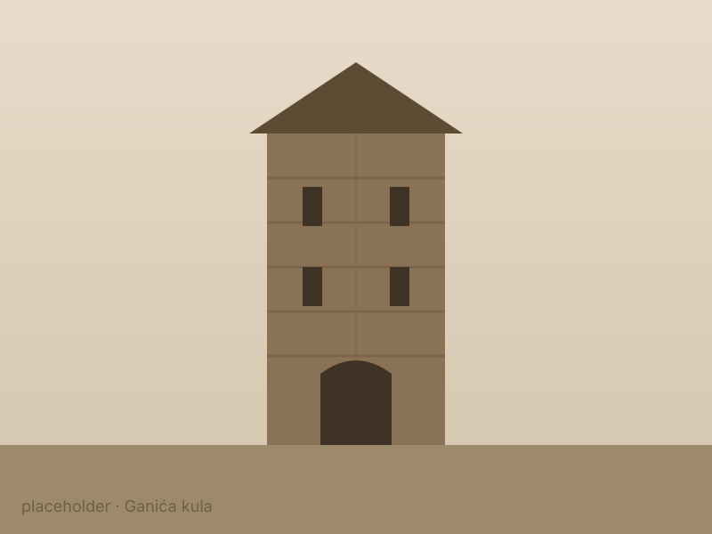
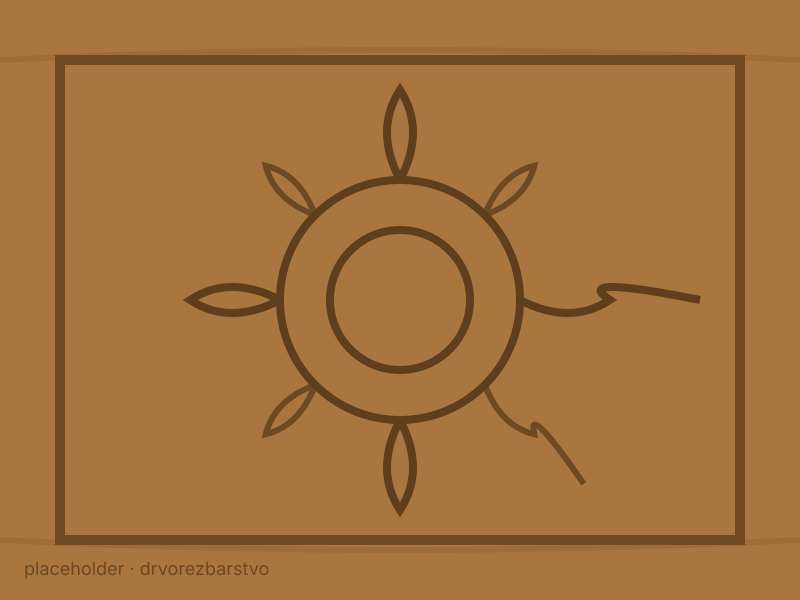

Priče, zanati i znamenitosti koje grad čine onim što jeste.
Vjekovi iza nas
Rožaje su vjekovima raskršće puteva, naroda i zanata. To se i danas vidi — u kamenim kulama, u rezbarenom drvetu, u pjesmi i u običajima koji se i dalje njeguju u porodicama.
Simbol grada
Ganića kula je utvrđena porodična kula iz 19. vijeka i jedan od najprepoznatljivijih spomenika kulture u Rožajama. Danas u njoj djeluje muzejska postavka koja čuva predmete iz svakodnevnog života, stare zanate i istoriju kraja.


Stari zanat
Rožaje su nadaleko poznate po drvorezbarstvu — vještini ukrašavanja drveta sitnim rezbarenim šarama. Iz ovog zanata nastaju tavanice, namještaj i suveniri koji se i danas izrađuju ručno.
Nasljeđe oko nas
Vjerski objekti koji svjedoče o duhovnom i graditeljskom nasljeđu grada.
Tradicionalna muzika i izvorni napjevi koji se čuvaju kroz generacije.
Filigran, izrada nošnje i drugi zanati koji opstaju i danas.